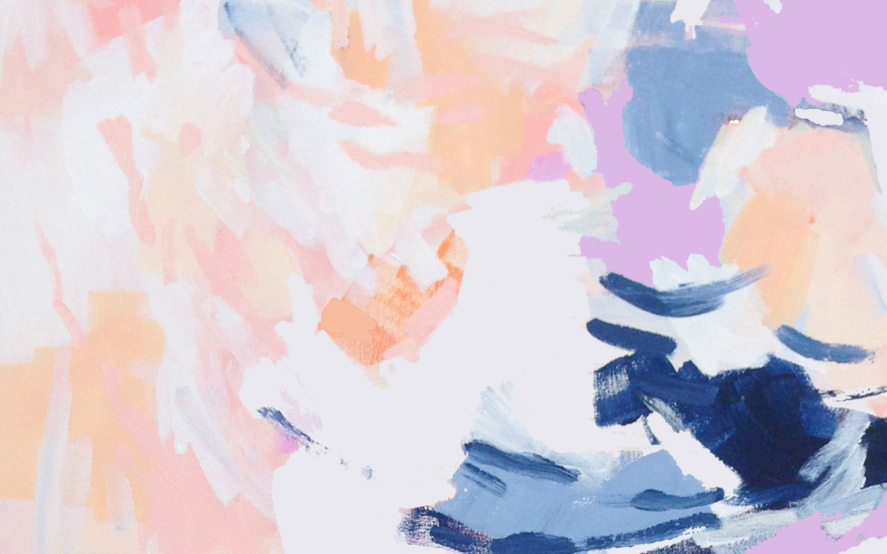
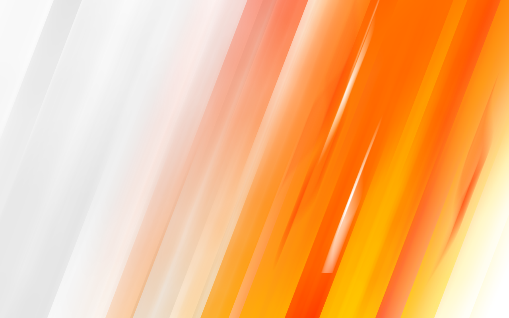
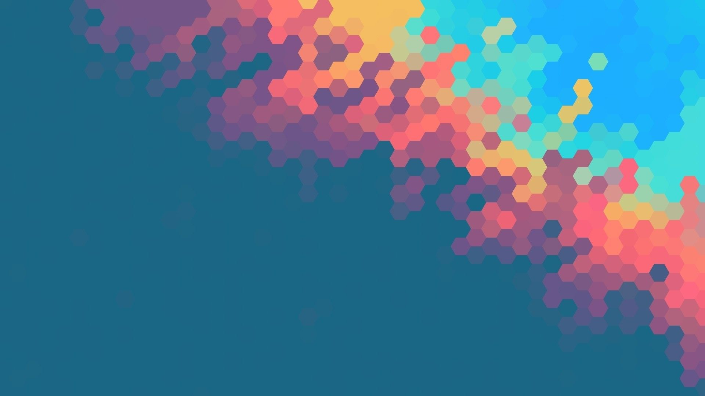
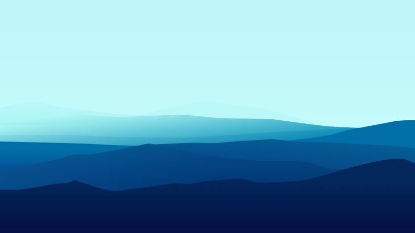
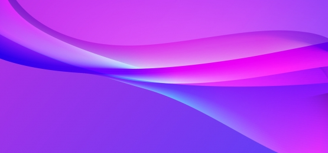
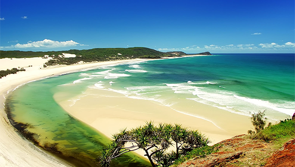
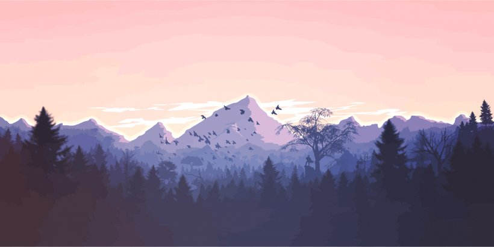

A - Bahasa Indonesia dan Penulisan Ilmiah
Senin 10:00 WIB

Bu Indriana Hidayah, Pak Sunu Wibirama, Pak Azkario Rizky Pratama
Link Kuliah Pra UTSLink Kuliah Pasca UTS
Link Presensi
A - Komputasi Awan
Senin 15:30 WIB

Pak Addyn
Link Kuliah Pra UTSLink Kuliah Pasca UTS
Link Presensi
B - Teori Vektor Matriks
Selasa 15:30 WIB
Rabu 13:00 WIB

Pak Husni Rois Ali, Pak Syukron Abu Ishaq Alfarozi
Link Kuliah Pra UTSLink Kuliah Pasca UTS
Link Presensi
A - Forensik Digital
Rabu 07:15 WIB

Pak Sujoko Sumaryono, Pak Dani Adhipta
Link Kuliah Pra UTSLink Kuliah Pasca UTS
Link Presensi
A - Pengembangan Aplikase Web
Rabu 10:00 WIB

Pak Bimo Sunarfri Hantono, Pak Ridi Ferdiana
Link Kuliah Pra UTSLink Presensi
A - Jaringan Komputer
Kamis 07:15 WIB

Pak Azkario
Link Kuliah Pra UTSLink Kuliah Pasca UTS
Link Presensi
A - Sistem Berbasis Mikroprosesor
Kamis 10:00 WIB

Pak Addin Suwastono, Pak Enas Dhuhri Kusuma
Link Kuliah Pra UTSLink Kuliah Pasca UTS
Link Presensi
A - Transformasi Digital
Kamis 13:00 WIB

Bu Sri Suning Kusumawardani, Pak Sunu Wibirama, Pak Lukito Edi Nugroho, Pak Bimo Sunarfri Hantono
Link Kuliah Pra UTSLink Kuliah Pasca UTS
Link Presensi
A - Rekayasa Data
Kamis 15:00 WIB
Pak Bimo Sunarfri Hantono, Pak Azkario Rizky Pratama, Pak Syukron Abu Ishaq Alfarozi
Link Kuliah Pra UTSLink Kuliah Pasca UTS
Link Presensi